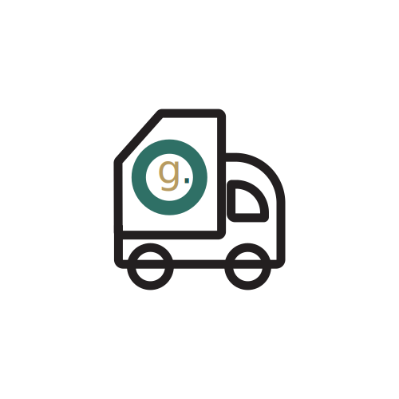

Defining Ontario's Future of Waste Management

Why
Net.Green is a industry 4.0 facillity built around a network of connected devices to capture and send raw data within the infrastructure to improve waste management operations and effieincy. Net.Geen facility runs on local renewable energy.
Our digitized soultions create factory automation that lead to a more cost effective and efficient process with the use of AI, sensors, data, cloud computing, and autonomous technology. Net.Greens’s top priority is sustainablilty, this approach of optimizing a waste management facility will have a smaller environmen- tal footprint then the conventional process.
Why industry 4.0 in waste management?
- Automation across a network of AI devices
- Optimized process lead to a more cost effective process.
- Smaller environmental footprint then the conventional process.
- Smaller environmental footprint then the conventional process.
- Data generated inside and outside facillity for continous analysis and preformance rating.
Approach
Net.Green is a industry 4.0 facillity built around a network of connected devices to capture and send raw data within the infrastructure to improve waste management operations and effieincy. Net.Geen facility runs on local renewable energy.
Our digitized soultions create factory automation that lead to a more cost effective and efficient process with the use of AI, sensors, data, cloud computing, and autonomous technology. Net.Greens’s top priority is sustainablilty, this approach of optimizing a waste management facility will have a smaller environmental footprint then the conventional process.

Smart
A connected facility that runs on smart technologies.

Renewable
Our facility runs on ontario's local renewable energy.
Green
A more effective and efficient way of sorting garbage.

Atonomous
A atonomous network internaly and externally
Research
Smart Factory
precident 01:

Our infrastructure was inspired by smart factory and their incredible use of automation. HxGN smart factory's offer solutions to digitalized factories to gen- erate and share data from every point in the products manufacturing life-cycle. Connected manufacturing can generate real time data, move that data from where its created to where it needs to be used to create value(efficiency, minimize waste, automation patterns, machine learning, AI).
harvested data can be used to develop a unique autonomous connected ecosys- tem (smart factory). Hexagon develops software and hardware products that support design, engineering, simulation, production, inspection, and data asset management allowing for optimization of infrastructure An important element of a ‘smart factory’ is Connected Devices. Everyone has heard of the ‘Internet of Things’ (IoT) when it comes to consumer devices like thermostats, light bulbs, and smart refrigerators in our homes...this concept also makes sense for our customers like you as you seek to use advanced new technology to connect all of your devices in your factory so that you can monitor and control them remotely, and, by looking at production data and sensor trends even predict when the machines will need servicing.
Another promising technology under the ‘smart factory’ umbrella is Artificial Intelligence (AI) – sometimes called machine learning (ML). It's now possible to use the advanced mathematical techniques of AI/ML to analyze the massive amounts of data that you have collected over time in order to gain some insight, make some predictions, and potentially even take direct autonomous action without human intervention.
These industry 4.0 solutions implemented in a waste management facility can be extreamly impactful in the communities long run. It will allow a connected ecosystem of smart devices that will allow the facility's internal and external elements to operate at maximum efficiency while keeping sustainability a top priority.
Moodboard:

Questions
Thank you for reading! Test your memory and new knowledge about net.green and its motives.